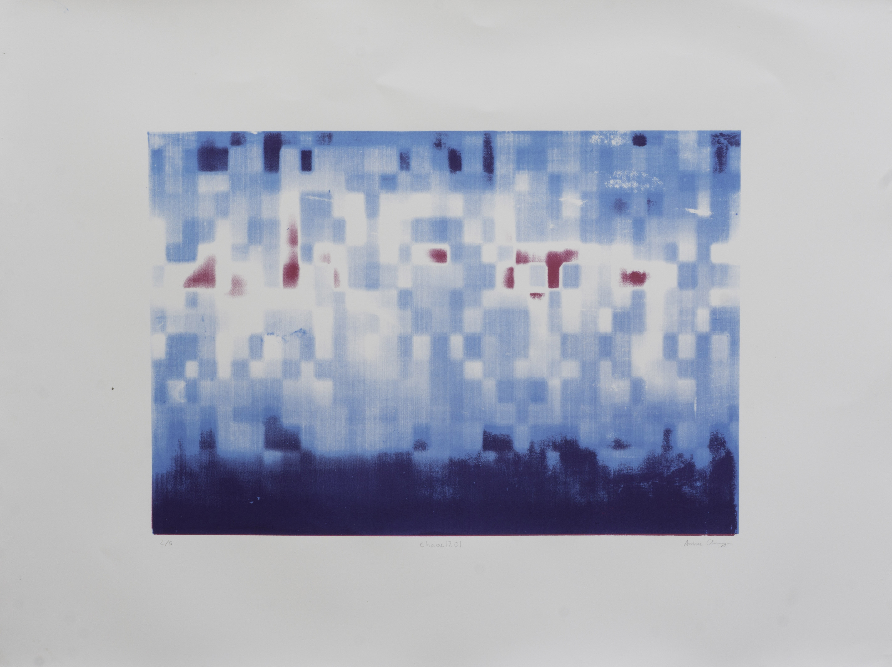
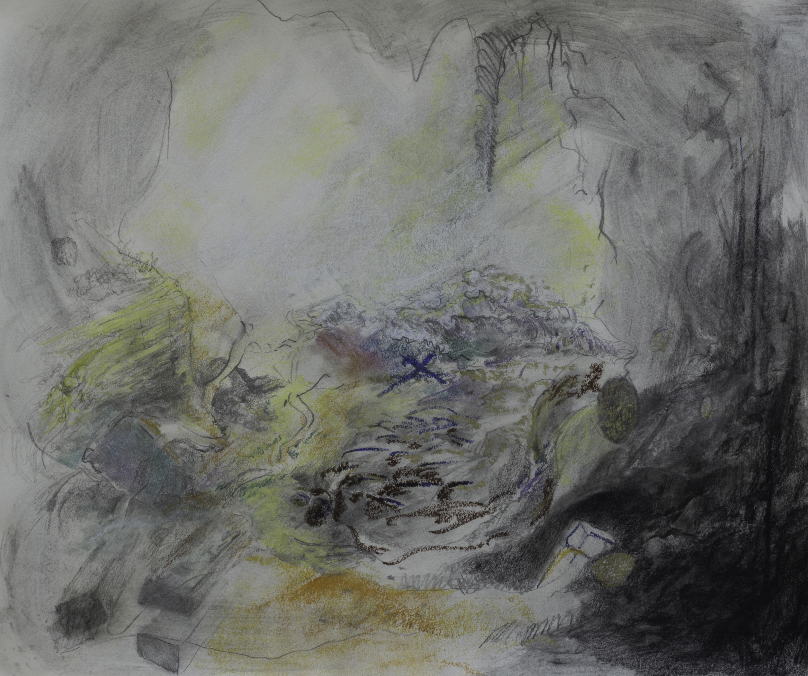
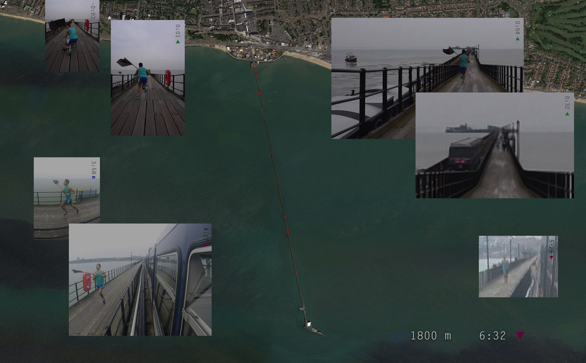

After more than one of the original glass chaos.17.01 prints shattered, I decided to do a few editions on paper. Here's one of them.


Southend Pier is a historic site, known as the longest pleasure pier in the world. On March 23, 2016, I raced the pier train – and lost.
